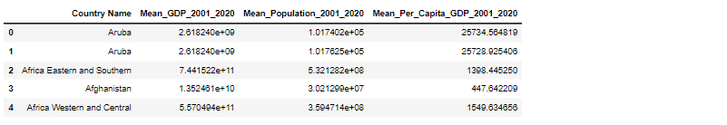

✥ Unit 4 - Linear Regression with Scikit-Learn
Outcomes from the Team Exercises and activites
This unit focussed on linear regression demonstrating its practical implementation using Python and the machine learning framework scikit-learn.
Scikit-learn (Pedregosa et al., 2011) is a general-purpose machine learning library written in Python. The steps to perform linear regression can be straightforward, especially when utilizing the Scikit-Learn library in Python, a robust tool for machine learning that offers simple and efficient solutions for data mining and analysis.
Pedregosa, F., et al. (2011) states that linear Regression with Scikit-Learn has the following advantages:
- Simplicity: Linear regression is a straightforward approach that is simple to grasp and interpret. As a result, it is a good starting place for those new to data science and machine learning.
- Efficiency: Scikit-learn's performance has been optimised. Using this module to implement linear regression is computationally efficient.
- Interpretability: In linear regression, the coefficients directly represent the change in the dependent variable for a one-unit change in an independent variable, assuming all other variables remain constant.
- Pandas integration: Scikit-Learn interacts seamlessly with Pandas, a popular Python data processing library. This simplifies the preprocessing and handling of data.
Limitations:
- Linearity Assumption: The intrinsic assumption of linearity is a fundamental constraint. Because real-world data is frequently non-linear, the model may fail to reflect complicated relationships (James, et al, 2013).
- Outlier Sensitive: Linear regression is susceptible to outliers, which can drastically alter the model's coefficients.
- Multicollinearity: In the presence of correlated independent variables, coefficient estimations might be unstable. It is critical to ensure that the independent variables are not overly connected.
- Overfitting: Linear regression, like many machine learning models, can suffer from overfitting, especially when employing many features. Regularisation techniques such as Ridge and Lasso regression can help to alleviate this (Rosa, 2010).
While linear regression is a fundamental approach, it is critical to understand its strengths and shortcomings. Scikit-Learn makes this easier by offering tools for not only implementing linear regression but also evaluating its performance and diagnosing potential problems.
Task A: Correlation
Pre-process the data – mean population of each country and mean per capita GDP (from 2001 to 2021) by making some arrangements for the missing values. Investigate any correlation between the mean population of each country and the mean per capita GDP (from 2001 to 2021). Very briefly, interpret the generated plot. Evaluate the Pearson Correlation Coefficient.
Data loading and exploration
- Firstly, the necessary libraries are imported and the Global_GDP and Global_population are loaded.
- The first five rows of the data are viewed using the ‘head ()’ syntax.
From the results, it can be seen that:
- GDP Data:
- Columns for Country Name, Country Code, Indicator Name, and Indicator Code.
- GDP values for each year from 1960 to 2020.
- Population Data:
- Columns for Country Name, Country Code, Series Name, and Series Code.
- Population values for each year from 1960 to 2021.
Data pre-processing
- Now, since we want to investigate any correlation between the mean population of each country and the mean per capita GDP from 2001 to 2021 and the GDP dataset does not have data for the year 2021. We will filter the data to include only the years from 2001 to 2020.
- As seen in the data, there are missing values in the GDP data and the population data. Thus, to handle the missing values, Linear Interpolation is used.
- The mean GDP and mean population for each country from 2001 to 2021 is calculated.
Correlation Analysis
- Both mean GDP and mean population are combined into one Dataframe. Then, mean per capita GDP for each country is calculated. 
- However, Aruba appears twice in the results. This requires further inspection.
- A scatterplot is used to visualize the relationship.
From the plot:
- There is a cluster of countries with lower average populations and varied per capita GDPs.
- A few larger countries with larger populations have lower per capita GDPs.
- There does not appear to be a strong linear relationship.
The Pearson Correlation Coefficient suggests a very weak negative linear association.
Task B: Regression
Perform linear regression, where the independent variable is the mean population of each country (from 2001 to 2021) and dependent variable is mean per capita GDP (from 2001 to 2021).
The model explains approximately 52.02% of the variance in the mean GDP, indicating that population size is a significant predictor of a country's GDP.
Reflection & Practical Use:
Because of its simplicity and interpretability, linear regression remains a cornerstone in the field of machine learning. With its user-friendly interface, Scikit-Learn simplifies the development of linear regression and many other algorithms, allowing for quick experimentation and application. This simplifies the process, enabling rapid prototyping and bridging the gap between complex theories and practical applications.
However, this simplification can sometimes obscure the underlying assumptions, such as linearity, independence, homoscedasticity, and normality. As practitioners, we must strike a balance between harnessing the efficiency of tools like Scikit-Learn while never losing sight of the fundamental principles that anchor our models. This reflective journey from abstraction to understanding is the essence of responsible and impactful data science.
References:
- James, G. et al. (2013) ‘Statistical learning’, Springer Texts in Statistics, pp. 15–57. doi:10.1007/978-1-4614-7138-7_2.
- Pedregosa, F. et al. (2011) Scikit-Learn: Machine learning in Python, The Journal of Machine Learning Research. Available at: https://dl.acm.org/doi/10.5555/1953048.2078195 (Accessed: 19 October 2023).
- Rosa, G.J. (2010) ‘The elements of Statistical Learning: Data Mining, Inference, and prediction by Hastie, T., Tibshirani, R., and Friedman, J.’, Biometrics, 66(4), pp. 1315–1315. doi:10.1111/j.1541-0420.2010.01516.x.
- Stöckl, A. and Bodenhofer, U. (2022) ‘Regression’, Applied Data Science in Tourism, pp. 209–229. doi:10.1007/978-3-030-88389-8_11.
- Tibshirani, R. (1996) ‘Regression shrinkage and selection via the lasso’, Journal of the Royal Statistical Society: Series B (Methodological), 58(1), pp. 267–288. doi:10.1111/j.2517-6161.1996.tb02080.x.
- Weisberg, S. (2014) Applied linear regression. Wiley.